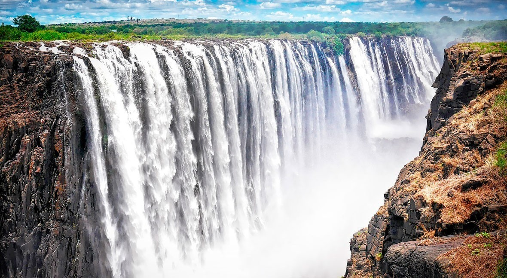

Area:- 11.7 million square miles(2nd largest continent)
No. of countries:- 54
Population:- 800 million
About the Africa(very short)
Home to a variety of minerals, animals and other natural resoureses. Africa has large variety of climates
desert in North, Reinforest in middle, and cold in south. Many people think that Africa is an under developed, but by the time this continent is also developing and it has lso many places to visit.
It has places like river Nile and Victoria falls for water sports.

If you are a history lover than Egptian Great pyramids and other historical buildings are for you.
For more information, Go to Africa wikipedia
Why you should visit Africa: